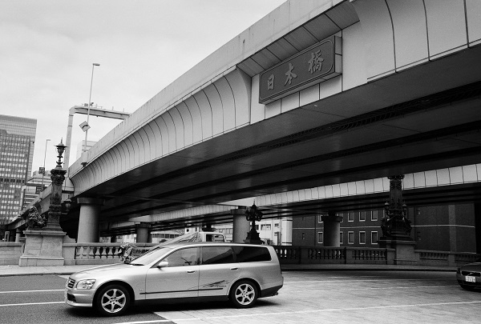

日本橋を出発して京都三条大橋まで約538Km 標高差約1531m(和田峠）。
歩き距離・時間はｽﾀｰﾄ駅から到着駅までです。
| 年月日 | 出発駅 | 到着駅 | 宿場 | 写真ﾌﾞﾛｸﾞ |
|---|---|---|---|---|
| 2014/10/11 | 東京駅_8:56 | 下板橋駅_11:49 | 日本橋 | 2015まで.. 日本橋2014/10 |
| 2014/10/25 | 下板橋駅_9：05 | 大宮駅_14:35 | 1_板橋宿 | 板橋宿2014/25 |
| 2014/10/25 | 蕨宿 | 蕨宿_旧中山道20141025 | ||
| 2014/10/25 | 浦和宿 | 浦和宿_旧中山道20141025 | ||
| 大宮宿 | ||||
| 2014/10/29 | 上尾宿 | 上尾宿_旧中山道_20141029 | ||
| 2014/10/29 | 桶川宿 | 桶川宿_旧中山道_20141029 | ||
| 2014/10/30 | 北本駅_9：39 | 熊谷駅_15:07 | 21.9Km：5時間27分 | 2014/10 |
| 2014/12/2 | 熊谷駅_10:03 | 本庄駅_16:11 | 25.1Km：6時間7分 | 2014/12_ 2014/12__ 2014/12__ |
| 2014/12/9 | 本庄駅_10:19 | 高崎駅_15:58 | 23.3Km：5時間39分 | 2014/12_ 2014/12_ 2014/12_ |
| 2015/3/7 | 高崎駅_10:25 | 松井田駅_16:20 | 24.9Km：5時間55分 | 2015/3 2015/3 2015/3 |
| 2015/3/8 | 松井田駅_7:59 | 横川駅_14:35 | 28.5Km：6時間36分 | 2015/3 2015/3 |
| 2015/3/30 | 横川駅_8:10 碓氷峠越 | 中軽井沢駅_15:2 | 22.4Km：6時間25分 | 2015/3 2015/3 2015/3 2015/3 2015/3 2015/3 |
| 2015/3/31 | 佐久平駅 7:50 | 中軽井沢駅 12:41 | 18.2Km : 4時間51分 | 2015/3 2015/3 2015/3 2015/3 2015/3 |
| _ | _ | _ | _ | __ |
日本橋です 今は橋の上に首都高速が。
